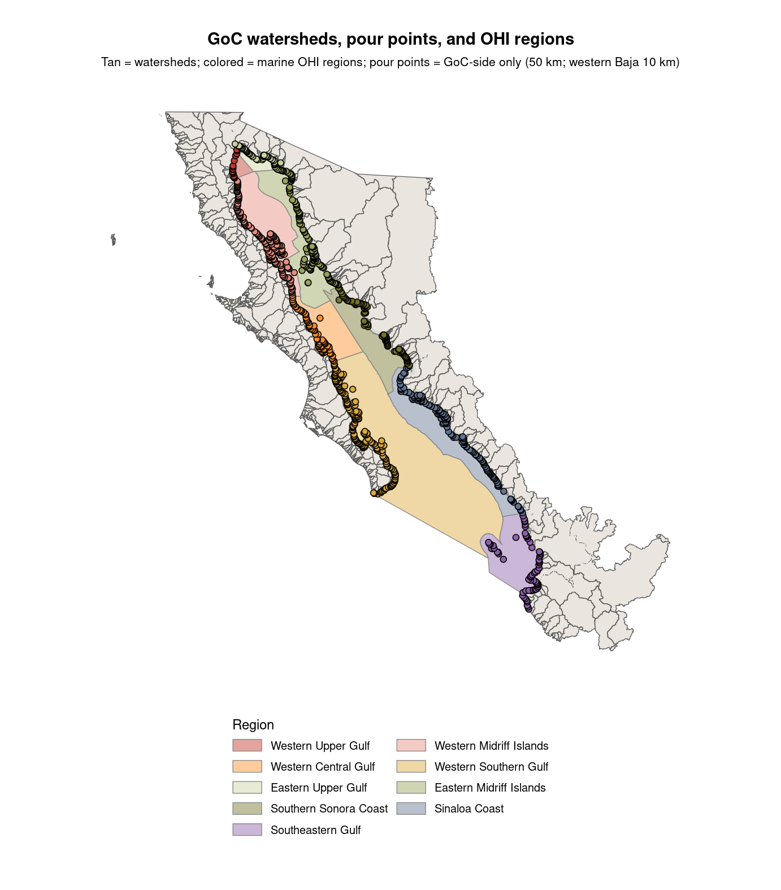
 Clean Waters EWG 3.3
Clean Waters EWG 3.3
Early Look: Clean Waters (CW)
We plan to review our current estimates of CW scores at the Expert Working Group meeting 3.3. This document is meant to give you an overview of the goal model, the reasoning behind each component’s methodology, and an early look at the outputs before we meet. If you have minor methodological concerns, please flag them and bring them to the meeting. If you have major methodological concerns, please share them with me ahead of time (my email is smanos@nceas.ucsb.edu). If you cannot make it to the meeting but would like to discuss, I am happy to meet 1:1 before or after. Please be advised that this document is intended for internal use only and informational purposes. It should not be interpreted as the final word or as peer-review quality. Thank you for your continued engagement with this work. We look forward to discussing these scores with you on September 10th!
About the CW Goal
The Clean Waters (CW) goal measures the degree to which local waters are unpolluted by anthropogenic sources. People value marine waters that are free of pollution and debris for aesthetic and health reasons. Contamination of waters comes from various sources, such as oil spills, chemicals, nutrient loading (eutrophication), disease pathogens (e.g., fecal coliform, viruses, and parasites from sewage outflow), and floating trash. People are sensitive to these pollutants, especially in areas they access for recreation, and place a high “existence value” on simply knowing that clean waters exist. We have included four components of pollution in our Clean Waters goal: pathogens, chemicals, eutrophication (nutrients), and marine debris. The status of these components is typically the inverse of their intensity: high contamination yields a low status score, and the goal scores highest when contamination is near zero. Calculating CW scores includes these components:
- Pathogens (PAT)
- Chemicals (CHM)
- Pesticides (PEST)
- Pharmaceuticals (PHRM)
- Hazardous waste sites (HAZW)
- Untreated wastewater discharge point sites (WWPS)
- Vessel hydrocarbon estimation (VESS)
- Microplastics (MCRO): explored, but not scored due to data limitations
- Eutrophication (EUT)
- Marine Debris (MAR)
- Risk of ghost gear (RIGG): used for MAR status
- Trash Litter (TRAS): explored, but not scored due to data limitations
A score of 100 means the region is at the “ideal state” for that indicator.
CORE DEFINITION
- Focus: How free coastal waters are from pollution caused by people that affects health, recreation, seafood, and ecological condition, relative to the ideal state of zero pollution.
- Not about: The exact, physical amounts of contaminants within or entering the Gulf’s local coastal waters. The score represents relative risk based on management effectiveness, as we only had access to consistent in situ monitoring for the Pathogens subcomponent.
- Emphasis: Identifying the types of contamination impacting both ecological and human communities along the Gulf coast.
Goal model
At the goal level, we combine the four components with a simple arithmetic mean: CW = average(Pathogens, Chemicals, Eutrophication, Marine Debris)
\text{CW}_{r,t} = \frac{PAT_{r,t} + CHM_{r,t} + EUT_{r,t} + MAR_{r,t}}{4}
For each OHI Gulf of California region, r, and year, t. We did consider a geometric mean, which is how the components of Clean Waters are combined within the OHI Global framework. However, we decided that it would not make sense in this case because the geometric mean should be used primarily when a very low score in one component would negatively affect the region so much that the scores of the other components would be irrelevant. For this approach to make sense, a subcomponent score of 0 must indicate a level of pollution that has dramatic biological implications in the region. However, based on the reference points we used for most of the components, a current status of zero does not indicate that “nothing could live there” or that it is absolutely unswimmable, but rather that, compared to other regions and years, that region had equal to the most polluted waters for that type of contaminant seen in the Gulf. That means that even if the pollution is not as bad as the most polluted location in the world, it is the worst in the region. For example, we discovered that using the geometric mean would cause the Sinaloa coast to have a Clean Water score of zero in 2017 because the Marine Debris pressure measuring ghost gear risk was at its peak. We did not think this score accurately represented the region’s water quality given the biological consequences of this component as well as the scores of the other components. This further confirmed our decision to equally weight the 4 components of pollution that we measured.
| Component | What it measures |
|---|---|
| Pathogens | Enterococcus levels at monitored beaches (Playas Limpias) |
| Chemicals | Average of pesticides, pharmaceuticals, hazardous waste sites, untreated wastewater outfalls, and vessel hydrocarbon risk. In the future, it will include microplastics as well. |
| Eutrophication | Excess nitrogen reaching the coast from wastewater, agriculture, livestock, and shrimp aquaculture |
| Marine Debris | Risk of abandoned fishing gear (“ghost gear”). Trash litter / megatrash explored but not scored yet. |
Scores are calculated for each of the nine OHI Gulf of California regions. A score of 100 represents the ideal clean waters state.
Overall Clean Waters status
For many pressures that start on land, the method is similar: activity happens inland, we estimate how much pressure can move toward the sea, we assign that intensity to the OHI region where it is most likely to affect the Gulf coast, and then we turn higher intensity into a lower status score.
The ideal is usually zero contamination pressure. For several chemical indicators, the low end of the scale is based on the highest pressures we observe across Gulf regions and years (often using the mean of the top five observations, so one extreme outlier does not set the entire scale by itself). Those scores are relative rankings within this assessment. The only component where that is not the case is for Pathogens, as México already has a clear beach suitability threshold we can use as a reference point, and all data is measured in situ.
The map below shows the Gulf of California OHI regions together with watershed boundaries and coastal pour points. This is the spatial scaffolding used for several land based Clean Waters pressures (especially chemicals).
The overall Clean Waters score summarizes how close each OHI Gulf of California region is to unpolluted coastal waters across pathogens, chemicals, eutrophication, and marine debris. Higher CW scores signal that a region is closer to cleaner coastal waters based on best available data. Lower scores highlight where one or more components show elevated potential contamination. Therefore, as you go through this report, I recommend that you review the component charts, not only the overall scores, to see which component is driving the result.
\text{CW}_{r,t} = \frac{PAT_{r,t} + CHM_{r,t} + EUT_{r,t} + MAR_{r,t}}{4}
Note that not every component has the same years of data. Pathogens span 2018 to 2025. Chemicals have a longer series based on the data sources used. Eutrophication is currently a single snapshot carried forward across years. Marine Debris has a longer series based on the data sources used.
Regional trajectories for overall CW
Gulf wide average CW current status
Overall Clean Waters status by region
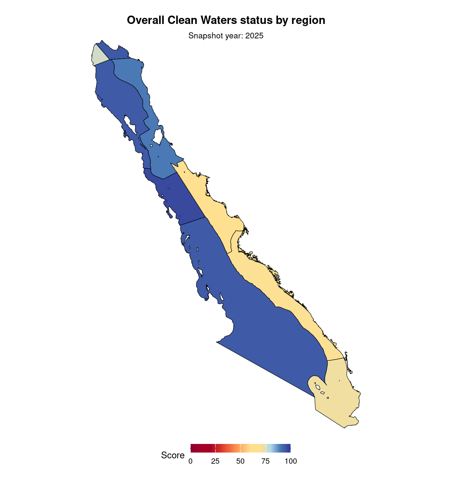
OHI region names (for reference):

Pathogens (PAT)
We assessed the Pathogens subcomponent of the Clean Waters goal using Enterococcus spp. as a fecal indicator bacteria (FIB), measured as the Most Probable Number (Número Más Probable, NMP) per 100 mL, drawn from CONAGUA’s Playas Limpias monitoring program at highly visited beaches across the Gulf of California for the years 2018-2025. We digitized the raw data manually from the Playas Limpias website into a CSV file. Current monitoring (2022-2025) is combined with historical digitized tables (2018, 2019, and 2021). There is no 2020 Playas Limpias sampling in this set (due to COVID-19), so that year is left missing rather than gapfilled. We set our reference points based on Mexico’s legal beach suitability standard, which classifies beaches as suitable (“Apta”) at 0-200 NMP/100 mL and unsuitable (“No Apta”) above 200 NMP/100 mL.
We therefore set the ideal at 0 NMP/100 mL and the maximum at 200 NMP/100 mL. We also explored 104 NMP/100 mL as an alternative upper threshold, based on the California Blue Water Task Force standard from the California State Water Resources Control Board for “high” Enterococcus spp. levels, but ultimately retained the 200 NMP/100 mL threshold in order to apply Mexican rather than US regulations. We also noted that the most severe exceedance observed, which was Guaymas in winter 2025, at approximately 608 NMP/100 mL, would have exceeded the 104 threshold regardless.
For spatial assignment, we intersected all sampling site coordinates with the OHI region. The Playas Limpias dataset was organized across three nested spatial levels below the OHI region: a sitio de muestreo was the finest level, representing an individual sampling point within a beach; a playa was a named beach that could contain one or more sitios; and a destino was a coastal tourism destination (such as San Felipe or Mazatlán) that could encompass one or more playas. Measurements are aggregated upward through this sitio → playa → destino hierarchy before regional scoring.
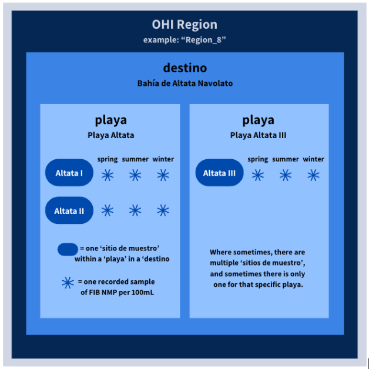
We aggregated Enterococcus spp. measurements from individual sampling sites up to the regional level following a hierarchical order of operations. First, we took the arithmetic mean of all MPN measurements within the same site (sitio de muestreo), season, and year, since some sites were sampled more than once per season. Second, we averaged across sites within each playa for each season and year. Third, we averaged across playas within each destino for each season and year. We aggregated NMP values upward through these three levels using arithmetic means before calculating any status scores, because we wanted the status score to reflect a single representative Enterococcus spp. concentration for the destino as a whole in a given season, rather than allowing the transformation to interact with averaging across spatially nested units. Fourth, we calculated a status score for each destino, season, and year as:
\text{status}_{d,s,y} = \left(1 - \frac{NMP_{d,s,y} - NMP_{\text{ideal}}}{NMP_{\text{maximum}} - NMP_{\text{ideal}}}\right) \times 100
where NMP_{\text{ideal}} = 0 and NMP_{\text{maximum}} = 200 NMP/100 mL (Mexico Apta / No Apta threshold).
Fifth, we took the geometric mean of the seasonal status scores for each destino and year, so that a single poorly performing season meaningfully dragged down the annual score for that destino:
\text{annual destination score} = \left(\text{winter} \times \text{spring} \times \text{summer}\right)^{1/3}
Sixth, we computed a coastline length weighted mean across all destinos within each region and year to produce the final regional score:
\text{region score} = \text{weighted average of destination scores (by sampled coastline length)}
Weights were derived by using the Natural Earth 10m global coastline shapefile, creating 1 km buffers around each sampling site, and intersecting those buffers with the coastline to obtain the length of coast actually sampled per destino per year, in meters (using Mexico ITRF2008 / LCC). Destinos with more sampled coastline therefore contributed more to the regional score. To assess whether this choice meaningfully changed our results, we compared the weighted and unweighted regional scores across all years. In most regions, the two approaches produced identical or near-identical scores, with differences of 0.0 to at most 2.1 points across all years. The one exception was Southern Sonora Coast, where the weighted mean diverged substantially from the unweighted mean in 2025, producing a score of 48.6 compared to 61.3 (a difference of 12.7 points). This was driven by Guaymas, which had a long sampled coastline and an extreme exceedance event in Winter 2025 at Playa El Veneno/Playa Miramar and Playa San Francisco (destino mean NMP of ~608 NMP per 100 mL), meaning it received a disproportionately large weight and pulled the regional score down more than a simple average would have. Given that the weighted mean better reflects the actual spatial extent of contamination, we retained it as our approach for all regions and years.
Pathogens component result
Enterococcus NMP compared with a 0 to 200 scale for 2018 to 2025 (2020 missing), composed across seasons, and summarized to OHI regions with coastline weights.
Gulf wide average Pathogens current status
Pathogens status by region
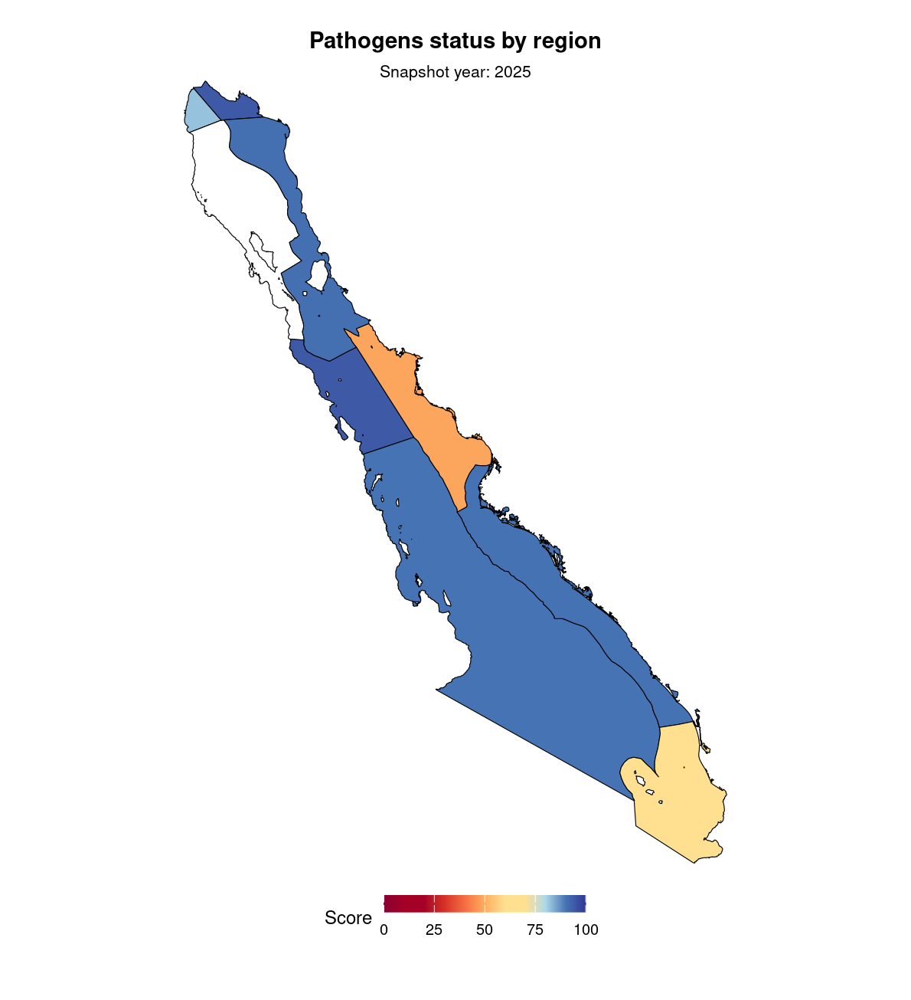
OHI region names (for reference):

Playas Limpias sampling sites
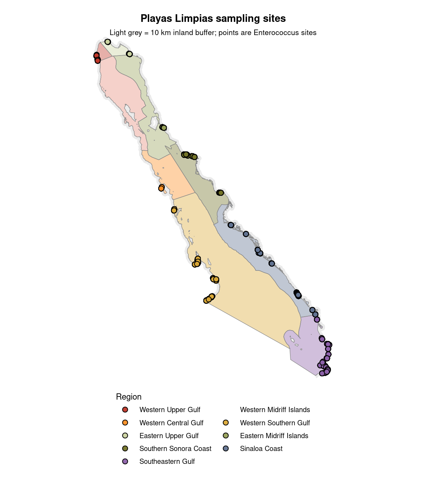
Chemicals (CHM)
Chemicals can be introduced into the environment through many routes including: agriculture, aquaculture, wastewater, contaminated sites, and vessels. We included five subcomponents in the chemical score that we combined with an arithmetic mean (equal weights for now):
\text{Chemicals score} = \text{average of }(\text{Pesticides}, \text{Pharmaceuticals}, \text{Hazardous waste}, \text{Untreated wastewater}, \text{Vessel hydrocarbons}, \text{Microplastics})
Where Microplastics would, in theory, be included in the Chemicals score, but we currently lack reliable data for microplastics (see Microplastics section). Some region and year combinations have little or no applicable data for a subcomponent and are treated as 100 in the combined Chemicals score (for example, Western Upper Gulf pesticides and hazardous waste, and Western Midriff Islands untreated wastewater).
Helpful context papers for the broader chemical pollution picture in the Gulf include Páez-Osuna et al. (2017) on the environmental status and pollution of the Gulf of California, and work such as Arellano-Aguilar et al. 2017, with expert Betancourt-Lozano and colleagues, on agrochemical loading in Sinaloa coastal systems.
Chemicals component result
Arithmetic mean of the five scored chemical subcomponents.
Gulf wide average Chemicals current status
Chemicals status by region
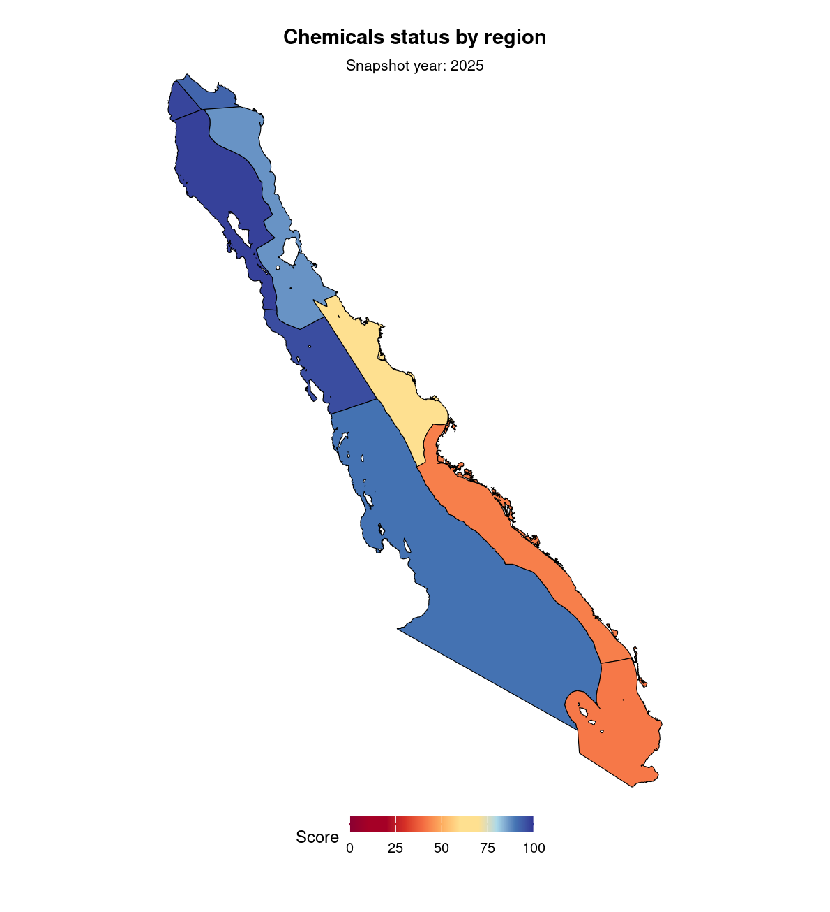
OHI region names (for reference):

Pesticides
To estimate the potential pesticide pressure on Gulf of California (GoC) waters, we used two primary data sources: land use and vegetation (USV) shapefiles from CONABIO across seven survey years (1985, 2001, 2005, 2009, 2013, 2016, and 2021), and national pesticide application rates (kg/ha) for Mexico from FAOSTAT, available through 2023. México’s FAOSTAT application rate data was recently updated through 2024, so we will update the scores using those values before publication.
We used the land use and vegetation data to determine the location and area of agricultural land. For each year of data, we filtered the data to retain only active cropland classifications, excluding categories representing secondary vegetation on formerly agricultural land (such as shrubby or herbaceous secondary vegetation on rainfed or irrigated agriculture) as well as mixed agriculture and grassland types (for example, rainfed agriculture with grassland, shifting agriculture within secondary forest). The categories we retained included rainfed, irrigated, moisture or floodplain, and occasional irrigated agriculture across annual, semi-permanent, and permanent subtypes. The cropland classes we retained (Y) and excluded (N) are summarized below:
| Spanish description (USV) | English | Keep |
|---|---|---|
| AGRICULTURA DE TEMPORAL (and annual / semi-permanent / permanent variants) | Rainfed agriculture | Y |
| AGRICULTURA DE RIEGO (and annual / semi-permanent / permanent / eventual variants) | Irrigated agriculture | Y |
| AGRICULTURA DE HUMEDAD (and variants) | Moisture / floodplain agriculture | Y |
| AGRICULTURA DE TEMPORAL CON EROSIÓN / CON MATORRAL SUBINERME | Rainfed with erosion or non-spiky shrubland | Y |
| AGRICULTURA DE RIEGO CON EROSIÓN | Irrigated with erosion | Y |
| VEGETACIÓN SECUNDARIA … DE AGRICULTURA … | Secondary vegetation on former cropland | N |
| AGRICULTURA DE TEMPORAL CON HERBAZAL / mixed grassland types | Rainfed agriculture with grassland / mixed | N |
| … CON AGRICULTURA NOMADA | Shifting agriculture within secondary forest | N |
To estimate pesticide loads, we intersected the filtered agriculture polygons with GoC watersheds and calculated polygon area in hectares. We estimated total pesticide load for each watershed by summing total agricultural area by watershed and year and then multiplying by the FAOSTAT national pesticide application rate for Mexico (kg/ha) by year:
\text{pesticide load (kg)} = \text{agricultural area (ha)} \times \text{application rate (kg/ha)}
We applied a single national rate uniformly across all watersheds and crop types, as sub-national or crop-specific rates were not available. We then identified where each watershed empties into the ocean, or its pourpoint, and assigned it to an OHI region. We then summed the total pesticides from all the watersheds entering each OHI region. Because the most recent USV survey year was 2021, we held agricultural area constant at 2021 values for subsequent scenario years and applied the corresponding FAO application rates, as follows:
| USV year | FAO year | Scenario year |
|---|---|---|
| 2021 | 2023 | 2025 |
| 2021 | 2023 | 2024 |
| 2021 | 2023 | 2023 |
| 2021 | 2022 | 2022 |
| 2021 | 2021 | 2021 |
| 2021 | 2020 | 2020 |
We calculated the current status for each region and year as:
\text{Pesticides score} = \left(1 - \frac{\text{current load} - \text{ideal}}{\text{maximum} - \text{ideal}}\right) \times 100
Reference points: ideal = 0 kg (no pesticide load); maximum = average of the five highest pesticide loads (kg per km of coastline) across all regions and years. Higher potential pesticide loads corresponded to greater pressure and lower status scores.
Pesticides result
Pesticides status by region
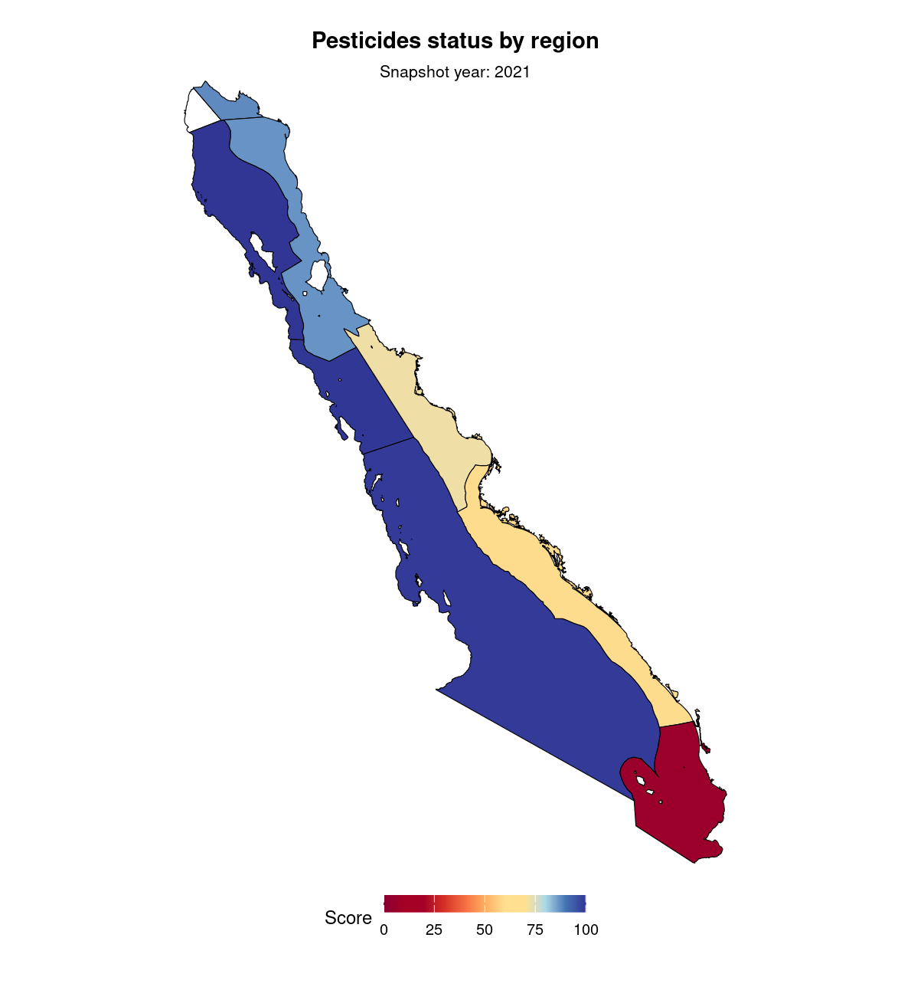
OHI region names (for reference):
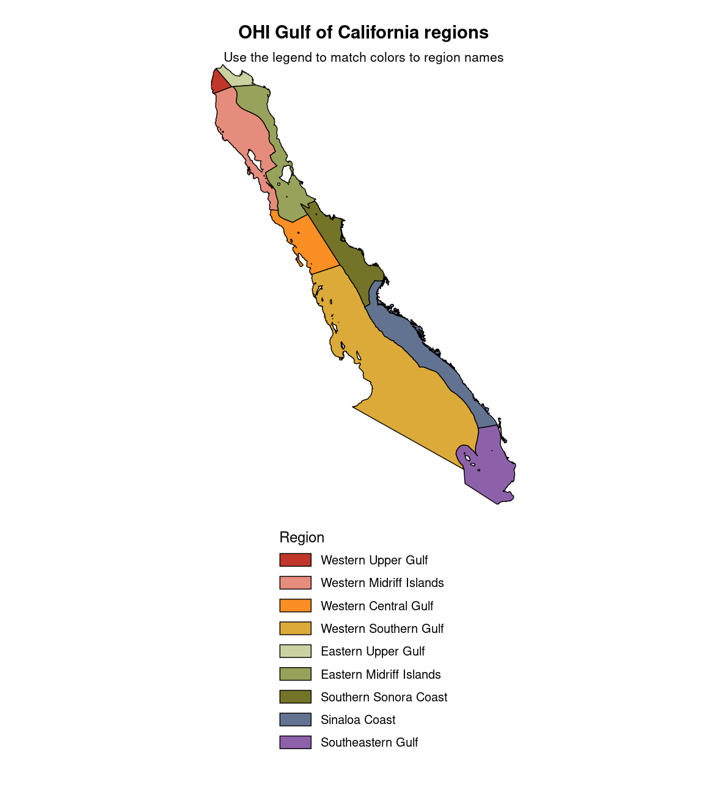
Agricultural pesticide pour points
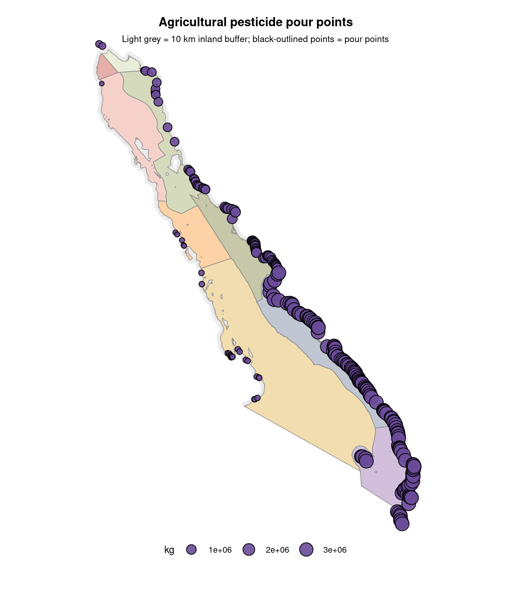
Pharmaceuticals
We estimated pharmaceutical contamination risk to the Gulf of California (GoC) by quantifying the total mass of pharmaceutical compounds (in mg) potentially entering the GoC from three sources: human wastewater, antimicrobials from livestock, and antimicrobials for shrimp farming. We then aggregated these estimates by region and year, standardized by coastline length, and calculated a current status score for each region.
Human wastewater. We obtained wastewater treatment plant (WWTP) operational data from Mexico’s CONAGUA SINA database (SINAV 3.0) for each year from 2017 to 2023. For each year of WWTP data, we identified the watershed where each treatment plant was located and then estimated annual effluent volume per WWTP by multiplying each plant’s reported flow rate (caudal, in L/s) by 31,536,000 seconds/year. Note that this assumes continuous operation, meaning the estimate is an upper bound. We then summed total estimated effluent (L/yr) by watershed and year, joined these to GoC pourpoints, and filtered to those within a 50 km inland buffer, with an additional filter to exclude Pacific-side pourpoints for Western Southern Gulf, Eastern Upper Gulf, and Southeastern Gulf using a 10 km inland buffer. We then intersected pourpoints with OHI region polygons and aggregated total L/yr by region and year. To convert effluent volume to a pharmaceutical mass estimate (mg), we multiplied total L/yr by the mean pharmaceutical concentration derived from literature values. Specifically, we obtained these values from literature reviews that documented ranges of pharmaceutical ng/L from wastewater effluent (Supplemental Table 2 within Vázquez-Tapia et al. 2020 with additional information regarding Acetaminophen, Carbamazepine, Diclofenac, and Naproxen from Garduño-Jiménez et al. 2023). We ultimately only considered contaminants that pose high environmental risks, which we identified as 17β-estradiol (E2), Acetaminophen, Caffeine, Carbamazepine, Diclofenac, Ibuprofen, and Naproxen (Figure 1 of Hernández-Tenorio et al. 2024).
Finally, we corrected anomalies in the 2020 SINA records that we identified. These were unusual spikes and drops in estimated effluent for Sinaloa Coast and Southeastern Gulf, affecting 258 WWTPs. For each WWTP, we compared 2020 caudal values to the plant-level median across non-2020 years and flagged those with a ratio greater than 3x or less than 0.33x, or where the treatment process had changed. We set flagged 2020 values to NA and linearly interpolated within each region.
Livestock antimicrobials. We estimated livestock-derived pharmaceutical loads using global FAO livestock density raster maps (GLW4), municipal-level slaughter tonnes (DGSIAP, Mexican Government), and rates of North America antimicrobial use (Acosta et al. 2025). To determine where livestock are located, we used 2020 FAO livestock density maps that we resampled to 1 km for each of the following livestock groups: cattle/bovino, poultry/ave, goats/caprino, sheep/ovino, and swine/porcino. Because rates of antimicrobial use are based on tonnes of production (vs. standing heads reported by FAO), we then computed a weight raster by dividing each GLW cell density by the municipal GLW total to describe the relative production in each raster cell. We then obtained municipal-level slaughter volumes (in tonnes) from SIAP (DGSIAP, Mexican Government) for the years 2006-2024, rasterized these values onto municipality polygons, and multiplied by the weight raster to distribute slaughter tonnage across 1 km cells. Because we had a raster for every year and livestock “species”, as SIAP calls the livestock groups, we stacked those rasters across years for each livestock group (cattle/bovino, poultry/ave, goats/caprino, sheep/ovino, and swine/porcino) and summed them cell-wise to obtain total tonnes slaughtered per 1 km cell per year. We then converted tonnes to kg and multiplied by 101 mg/kg (the North America antimicrobial use intensity value from Acosta et al. 2025) to estimate mg of antimicrobials per cell. To obtain regional values, we then summarized by watershed, assigned to pourpoints and OHI regions, and interpolated values for 2023 due to missing public data from SIAP. This produced regional, annual values of the mg of antimicrobials that could potentially discharge into the GoC. We noted that cattle (bovino) slaughter volumes in Western Upper Gulf and Western Midriff Islands showed a sharp decline in 2024 relative to prior years, which was confirmed to be present in the raw SIAP source data and was isolated to Baja California. We interpreted this as a plausible real-world change (potentially due to drought, reduced slaughterhouse capacity, or increased live cattle exports to the US) rather than a data artifact, and retained the observed 2024 values.
Shrimp farming antimicrobials. We estimated pharmaceutical loads from shrimp farming using aquaculture land use polygons from INEGI’s USV surveys (2005-2021). For each survey year, we reprojected the polygons to match watershed CRS, intersected them with GoC watersheds, computed aquaculture area in hectares per watershed using polygon area calculations, and summed by basin and year. We estimated shrimp production from area using the slope from González-Rivas et al. 2023 (1.5 tonnes/ha, based on an R² = 0.874 linear relationship from 1993-2021 remote sensing data for Sinaloa and Sonora). We then joined production estimates to GoC pourpoints, filtered to those within the 50 km inland buffer (excluding Pacific-side peninsula pourpoints for Western Southern Gulf not within the 10 km buffer), and aggregated aquaculture area and shrimp production by OHI region and year. We converted short tons to kg and multiplied by 20.64 mg/kg (the North/Central America aquaculture antimicrobial use value from WOAH 2025, Table 5) to obtain mg of antimicrobials per region per year.
Aggregation of pharmaceuticals (mg) across sources. Prior to aggregating the three sources of chemical pollution for each region, we applied multipliers to account for the proportion of pharmaceuticals that is actually likely to reach the GoC.
For example, the livestock estimates from Acosta et al. (2025) represent antimicrobial application values rather than measured environmental concentrations. To get closer to the value actually making it to the ocean, we applied an excretion fraction to estimate the proportion of administered pharmaceuticals released in manure (vs. absorbed by the animal), followed by a runoff/leaching fraction to estimate the proportion transported to surface waters. Approximately 30-90% of veterinary pharmaceuticals may be excreted as the original compound or metabolite based on OECD guidance; therefore, we used the midpoint value of 60%. Published estimates of antibiotic losses from manure through runoff and leaching range from approximately 0.2% to < 5%; we applied the conservative upper-bound estimate of 5% to represent potential transport to surface waters.
For shrimp aquaculture, we accounted for the fraction of pharmaceuticals absorbed by shrimp and subsequently excreted, as well as the fraction that remains unabsorbed and is released directly into surrounding water. Based on Uno et al. 2010, the oral bioavailability of oxytetracycline (OTC) in Penaeus vannamei shrimp was 43.6-48.2% (at doses of 50 and 10 mg/kg, respectively). This means roughly 44-48% is absorbed by the shrimp, leaving approximately 52-56% unabsorbed and directly released into the water. Nearly 100% of applied OTC can be assumed to reach the ocean. However, we did find that Kemper et al. 2008, Välitalo et al. 2017, and Giedraitiene et al. 2011 noted that roughly ~40-90% of antibiotics applied are released to the sea bottom by fish excretion or urine. Therefore, to account for potential metabolic degradation, we applied a release fraction of 75%.
For human wastewater, we assumed that treated wastewater effluent containing pharmaceutical residues is discharged directly to coastal waters without additional attenuation. We assume these chemicals will reach the pour point of the watershed and enter the GoC, regardless of where they started and how long it took for them to arrive. Therefore, we applied a “multiplier” of 1.0 to WWTP-derived pharmaceutical estimates. After applying these multipliers, all three sources were combined to estimate total pharmaceutical loading (mg) by region and year.
Coastline standardization. To allow comparison across regions of different sizes, we standardized total estimated pharmaceutical mg by each region’s mainland coastline length. We obtained the 1:10m scale coastline shapefile from Natural Earth (v4.1.0), clipped it to the GoC, and removed island coastlines by erasing a 1,500 m buffer around the Islas del Golfo de California polygon. We intersected the remaining coastline segments with OHI region boundaries, and divided each region’s total pharmaceutical mg by its coastline length (km).
Current status calculation. We calculated current status for the pharmaceuticals subcomponent as:
\text{Pharmaceuticals score} = \left(1 - \frac{\text{current load} - \text{ideal}}{\text{maximum} - \text{ideal}}\right) \times 100
Reference points: current load is pharmaceutical mass per km of coastline; \text{ideal} = 0 (no discharge); \text{maximum} = average of the five highest mg per km values across all regions and years. Any region above the maximum is capped at a score of 0.
Pharmaceuticals result
Pharmaceuticals status by region
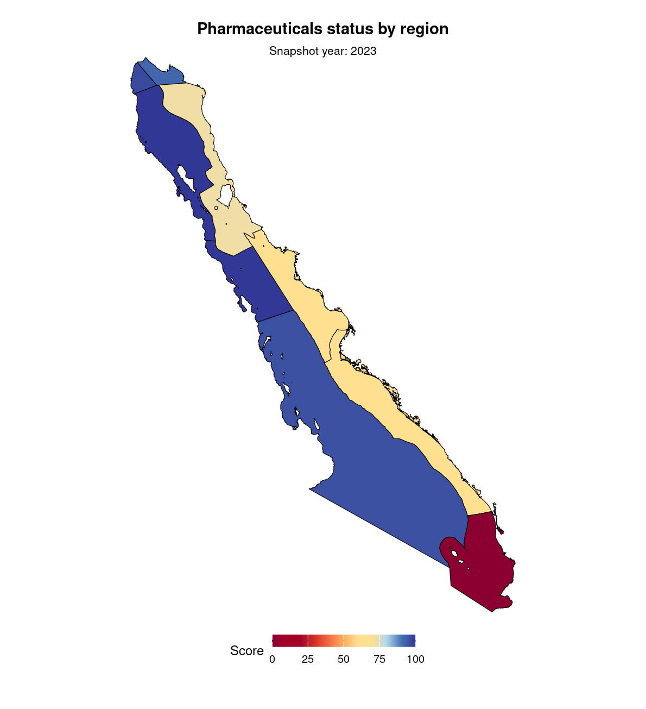
OHI region names (for reference):

Wastewater pour points (pharmaceuticals)
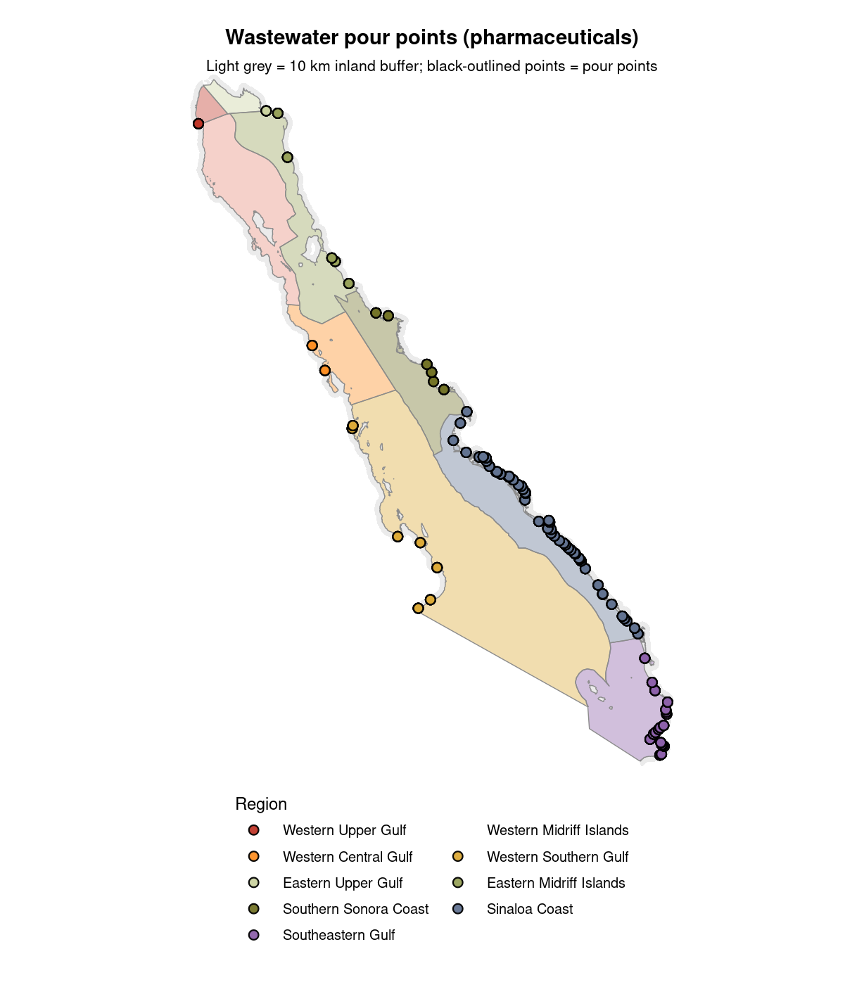
Hazardous waste sites
For the hazardous waste sites subcomponent, we estimated the current status of hazardous waste contamination by assessing both the density of hazardous waste sites and the remediation status of identified sites within each region and year. We used hazardous waste site inventories from SEMARNAT and ASEA, including records of contaminated sites and remediated sites, and combined these datasets to evaluate whether sites were contaminated, undergoing remediation, or remediated. To account for the spatial influence of hazardous waste sites on coastal waters, we limited the analysis to sites located within the 50 km inland buffer of each OHI region.
We calculated cumulative hazardous waste site density by region and year by dividing the cumulative number of identified sites by the area of each region, because even a remediated site is not pristine anymore. We then rescaled site density values so that regions with no hazardous waste sites received the highest score, while regions with the greatest site density received lower scores:
\text{site density score} = \left(1 - \frac{\text{current density} - \text{ideal}}{\text{maximum} - \text{ideal}}\right) \times 100
Reference points for density: ideal = 0 sites; maximum = average of the five highest cumulative site densities across all regions and years.
We also calculated a second score representing the remediation status of hazardous waste sites, which is a very actionable part of this subcomponent. We assigned remediation status values based on whether sites were remediated (1), had an approved remediation plan or were actively being remediated (0.5), or had no current remediation plan (0). We calculated the cumulative average remediation status of all sites within each region over time, such that earlier contaminated sites continued contributing to the score until remediation occurred. This score represented progress toward the desired condition where all identified hazardous waste sites are remediated.
Finally, we averaged the site density score and remediation status score:
\text{Hazardous waste score} = \frac{\text{site density score} + \text{remediation score}}{2}
where a score of 100 represented the ideal condition of no hazardous waste pressure and full remediation of identified sites, while lower scores represented higher concentrations of hazardous waste sites and/or incomplete remediation.
Hazardous waste sites result
Hazardous waste status by region
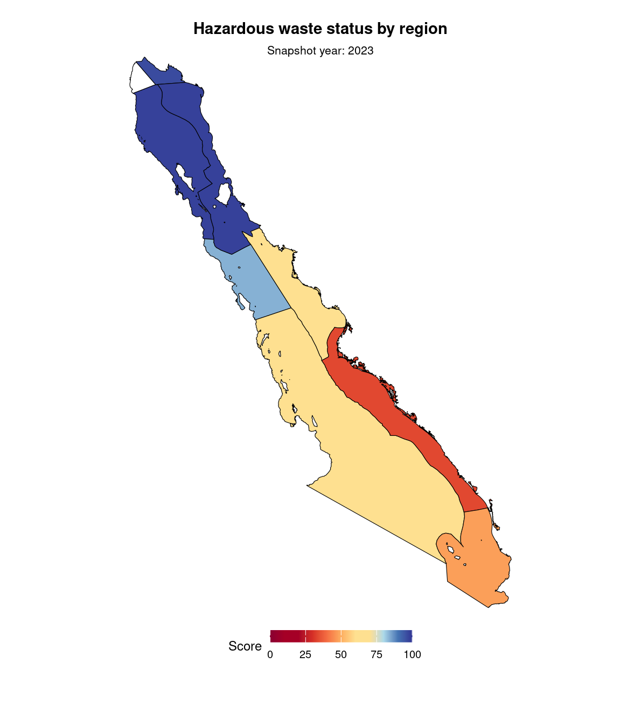
OHI region names (for reference):

Hazardous waste sites (50 km coastal buffer)
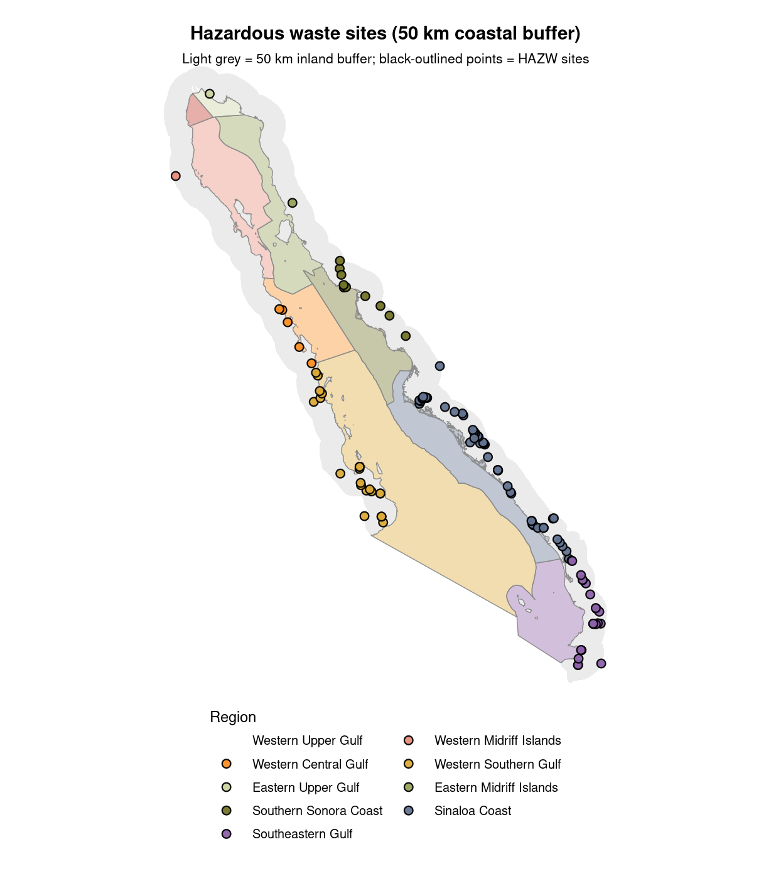
Untreated wastewater discharge points
For the untreated wastewater discharge points subcomponent, we estimated the current status of untreated wastewater entering coastal environments by calculating the density of municipal wastewater discharge points within each region and year. We used wastewater discharge data from Mexico’s National Census of Municipal Governments (CNGMD; 2013, 2015, 2017, 2019, 2021, 2023), which reports municipal untreated wastewater discharge points and their receiving environments. The dataset includes a variety of receptor types, representing locations where untreated wastewater may enter the environment. Because this indicator aims to capture untreated wastewater reaching environments connected to the Gulf of California, we limited the analysis to discharge points with receptor types of beach, ocean, estuary/marsh, river/stream, canal/drain, and ground/ravine. These receptor categories represent potential routes through which untreated wastewater can reach coastal waters, either directly or indirectly. We standardized the wastewater discharge datasets across census years, harmonized municipality identifiers, and joined discharge points to OHI regions.
Because the CNGMD data identifies discharge points by municipality rather than standardized geographic coordinates, we attributed discharge points to their corresponding municipality and region. For each region and year, we calculated untreated wastewater discharge point density by dividing the total number of qualifying discharge points by the area of the region (km²). This produced a measure of wastewater pressure that accounts for differences in region size. We then converted discharge point density into a 0-100 current status score by rescaling values relative to an ideal reference condition of zero untreated wastewater discharge points per km²:
\text{Untreated wastewater score} = \left(1 - \frac{\text{current density} - \text{ideal}}{\text{maximum} - \text{ideal}}\right) \times 100
where \text{ideal} = 0 sites per km² and \text{maximum} is the highest observed discharge point density across all regions and years. A score of 100 represented the desired condition of no untreated wastewater discharge points within a region, while lower scores represented greater densities of untreated wastewater discharge points and therefore greater potential pressure on coastal water quality.
Untreated wastewater points result
Untreated wastewater status by region
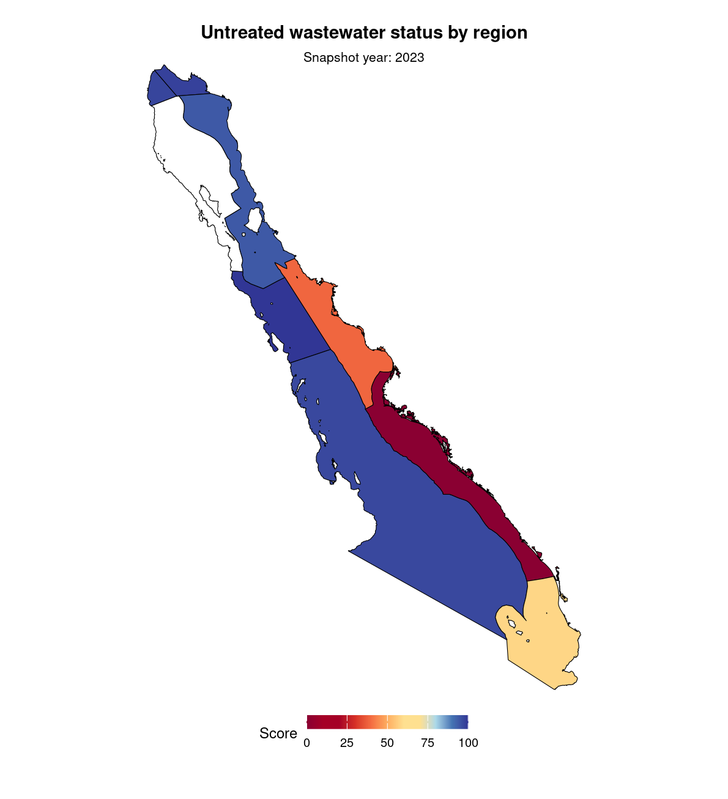
OHI region names (for reference):

Vessel hydrocarbon pollution
For the vessel hydrocarbon pollution subcomponent, we estimated potential vessel hydrocarbon pollution pressure using vessel activity as a proxy. To measure vessel activity we used VMS (Vessel Monitoring System) data provided by Dr. Juan Carlos Villaseñor (downloaded via Google BigQuery). Direct measurements of hydrocarbon releases from vessels were not available; therefore, we used fishing vessel effort (hours of activity) as an indicator of the relative likelihood of pollution events related to vessels. Vessel activities can contribute to chronic pollution pressure through potential oil spills, fuel and waste oil discharges, chemical releases, and other operational losses.
Because pollution risk depends on multiple vessel characteristics and operational practices that were not available in the dataset, we did not apply additional weighting based on vessel size or type. Instead, we assumed that higher vessel activity represents greater potential exposure to vessel-derived hydrocarbon pollution. We calculated the mean vessel effort (hours) within each OHI region across available years (2007-2025). This produced a relative measure of vessel activity intensity for each region and year, where higher values indicate greater potential pressure from vessel activities. We converted vessel effort into a 0-100 current status score by rescaling values relative to an ideal reference condition of zero vessel effort. The maximum pressure value was defined as the average of the five highest observed vessel effort values across all regions and years. We calculated current status as:
\text{pressure} = \frac{\text{current vessel effort} - \text{ideal}}{\text{maximum} - \text{ideal}}
\text{Vessel hydrocarbons score} = \left(1 - \text{pressure}\right) \times 100
where \text{ideal} = 0 and \text{maximum} is the average of the five highest observed vessel effort values across all regions and years. A score of 100 represented the desired condition of no vessel activity pressure, while lower scores represented greater vessel effort and therefore greater potential risk of hydrocarbon pollution from vessel operations.
Vessel hydrocarbons result
Vessel effort inverted to hydrocarbon pollution risk status.
Vessel hydrocarbons status by region
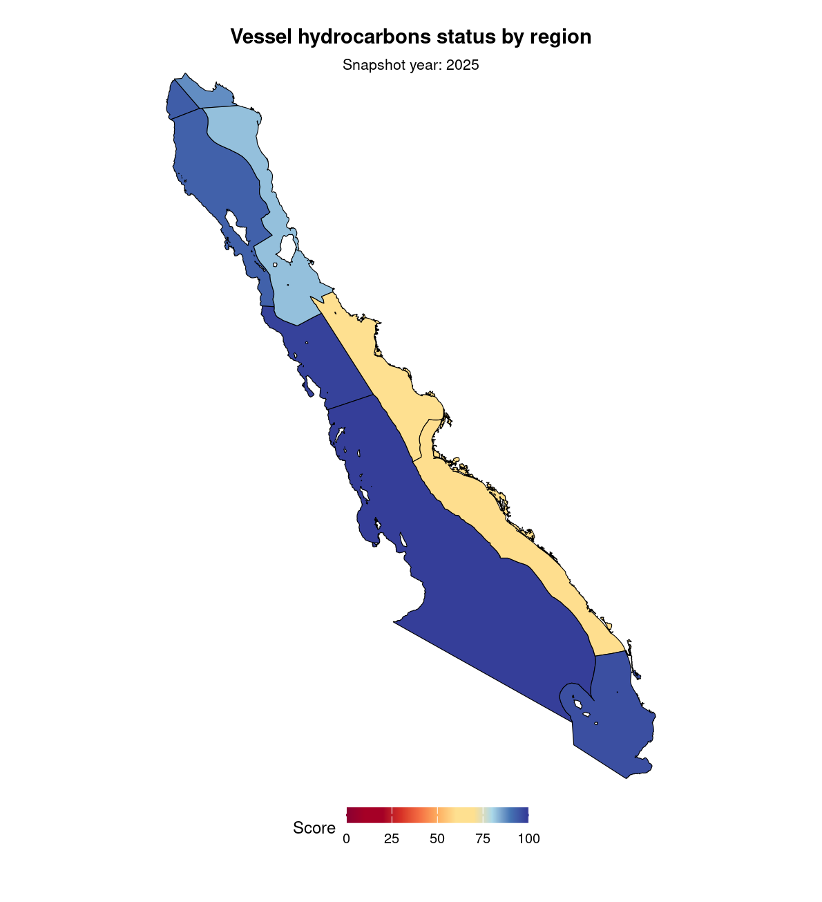
OHI region names (for reference):

Microplastics
Key references informing the microplastics exploration include Alvarez-Zeferino et al. (2020), Schröder et al. (2021), Sandgaard et al. (2023), Fulfer et al. (2023), Law et al. (2014), Barrows et al. (2018), Caro-Martínez et al. (2025), and Vázquez-Morillas et al. (2024), among others.
We initially explored microplastics as a subcomponent of the Clean Waters goal using the NOAA NCEI global marine microplastics database (1972-2018), which aggregates data from multiple research cruises and field studies into a publicly available repository. We examined three sampling types available for the Gulf of California: sediment cores, surface water neuston net trawls, and grab samples. For sediment, the most spatially comprehensive GoC data came from Alvarez-Zeferino et al. (2020), the first national assessment of microplastics on Mexican beaches, which reported concentrations across 14 sites in the Gulf of California. However, we determined these data were insufficient for calculating status scores for several reasons. First, the sediment cores were taken at only 0.05 m depth, and evidence from the literature suggests that microplastic concentrations in bottom sediments can be substantially higher than at the surface due to vertical migration and burial, meaning the Alvarez-Zeferino data likely underestimate true sediment loads. Second, the authors noted that five of the fourteen GoC sample sites coincided with Hurricane Bud, introducing uncertainty about whether elevated concentrations reflected baseline conditions or redistribution of plastics via storms. Third, converting the reported particle counts to particles/kg, which is necessary for comparison with other studies to determine a reference point, required assumptions about sand density (we used 1,442-2,082 kg/m³ for loose and wet-packed sand, respectively, based on this article), which introduced additional uncertainty. Using those conversions, we found that median concentrations in the GoC fell between 0.68 and 0.98 particles/kg, consistent with relatively rural beaches by the standards of Schröder et al. (2021), while maximum values reached 10-15 particles/kg, which were lower than urban estuarine systems such as Narragansett Bay (396-13,000 particles/kg; Fulfer et al. 2023), though potentially reaching “high” concentration thresholds defined by Sandgaard et al. (2023) depending on assumed particle weight. The ambiguity in interpreting these values, compounded by only having a single year of data (2018), a small sample size, and a lack of standardized reporting units across the literature, made it impossible to construct a reliable, regionally consistent pressure layer from sediment data alone.
For surface water, neuston net trawl data from Law et al. (2014) within the NCEI database showed a mean concentration of 0.004 particles/m³ across GoC sampling locations, comparable to Eurasian Arctic neuston net values (0.004 particles/m³) and the lower end of the global ocean surface range (0.002-62.5 particles/m³; mean 2.76). Grab samples from Barrows et al. (2018), collected at 0.45 m depth, showed a mean of 0.006 particles/m³ and a maximum of 0.017 particles/m³, which was well below the 1.7-2.0 particles/m³ recorded near Mazatlán in a separate 2021 manta trawl study. This discrepancy highlighted a key limitation: the NCEI data did not capture nearshore or urban areas where concentrations are likely higher, and microplastics are known to occur in surface waters in patches rather than homogeneous distributions, making trawl-based means incomplete indicators of true exposure in local coastal zones. Furthermore, the NCEI surface water data extended only to 2018, providing no coverage of more recent years and limiting our ability to characterize trends over the OHI assessment period.
Taken together, the available microplastics data for the Gulf of California suffered from insufficient spatial coverage, methodological inconsistency across studies, a lack of standardized reporting units, and only had a single temporal snapshot for the most spatially comprehensive dataset. In addition, there were known gaps in nearshore and urban sampling where pollution is likely concentrated. Broader reviews of microplastic research in Mexico (Caro-Martínez et al. 2025; Vázquez-Morillas et al. 2024) confirmed that there are data limitations, including inconsistent sampling protocols, varied reporting units, and an absence of a national monitoring database. Therefore, this currently prevents the existence of robust, comparable assessments across the Gulf of California.
Eutrophication (EUT)
We aimed to assess eutrophication in the Gulf of California (GoC) as part of the Clean Waters goal, which captured the degree to which local waters were unpolluted by human-made nutrient sources, including impacts on ecological health, human health, and food quality.
Initially, we explored using Harmful Algal Blooms (HABs) as a eutrophication indicator, because blooms are often linked to excess nutrients and matter for both ecosystem and human health. In practice, this did not work well for our Clean Waters status score. Event records such as HAEDAT are incomplete relative to what satellite products can show, and they usually lack clear information on the spatial extent of each bloom. Many red tides in the Gulf of California are not clearly driven by local nutrient pollution (some are tied to natural oceanographic processes such as upwelling), and trying to separate “eutrophication species” from naturally occurring blooms felt too uncertain for a defensible regional indicator. Taken together, HAB data were not reliable enough to represent eutrophication pressure across OHI regions and years, so we did not use HABs as the eutrophication status measure.
Secondly, Mel explored using chlorophyll a (chl-a) as a eutrophication risk indicator. She isolated nearshore (5, 10, and 15 km) and offshore regions and plotted annual mean chl-a values for each. It was found that nearshore chl-a was approximately twice the offshore values, but that the two tracked each other closely over time. Given that most nutrient pollution is from land based sources, we would expect to see nearshore levels of chl-a diverging from offshore levels if nutrient additions were affecting the biochemistry of the region. Furthermore, there was no evidence that chl-a levels were increasing over time for nearshore or offshore regions. Given the lack of responsiveness of chl-a to nutrient inputs, we decided it was not a reliable eutrophication indicator for the region.
We therefore decided to use nitrogen inputs as our measure of eutrophication pressure. We used Total Nitrogen (TN) anthropogenic discharge estimates by municipality and source from Romero-Gil et al. 2026, applying the following assumptions: mean values for wastewater, a leaching coefficient of 10% for agriculture, an export coefficient of 40% for livestock, and 100% nitrogen discharge reaching the sea for shrimp farming. We digitized these values from Table 6 of the paper’s Supplementary Material.
We considered several reference point options, but we ultimately used the maximum observed TN value (normalized by coastal length) across municipalities as our reference point, keeping scores comparable across regions. To calculate current status scores, we summed the TN inputs across all sources for each municipality, divided each municipality’s total by its coastal length to obtain tons per kilometer, identified the maximum value across all municipalities as the reference point, divided each municipality’s value by that maximum, and then averaged the rescaled values weighted by coastal length to produce a regional score:
\text{pressure} = \frac{(\text{nitrogen per km of coast}) - \text{ideal}}{\text{maximum} - \text{ideal}}
\text{EUT score} = \left(1 - \text{coastline weighted average pressure}\right) \times 100
Reference points: ideal = 0 nitrogen; maximum = the highest nitrogen per km of coast among municipalities. Municipalities with more coastline count more when we average up to the OHI region. We handled two gapfilling cases. For Concordia, a municipality with no coastline of its own due to being located slightly inland, we attributed its nitrogen discharge to the neighboring municipality of Mazatlán, as the majority of its nitrogen was expected to flow through a watershed with a pourpoint in Mazatlán. For Western Midriff Islands, where JARG reported no nitrogen discharge, we assigned a current status score of 100. For Southeastern Gulf, which was not included in JARG’s study area, we used Sinaloa Coast’s value as a rough estimate. We noted that Western Upper Gulf produced a notably low score (approximately 25), which we attributed to Mexicali being the sole municipality in that region, one characterized by intense cattle rearing relative to a short coastline length.
Eutrophication component result
Relative nitrogen pressure along the mainland Gulf coastline, inverted to a 0 to 100 status score.
Eutrophication status by region
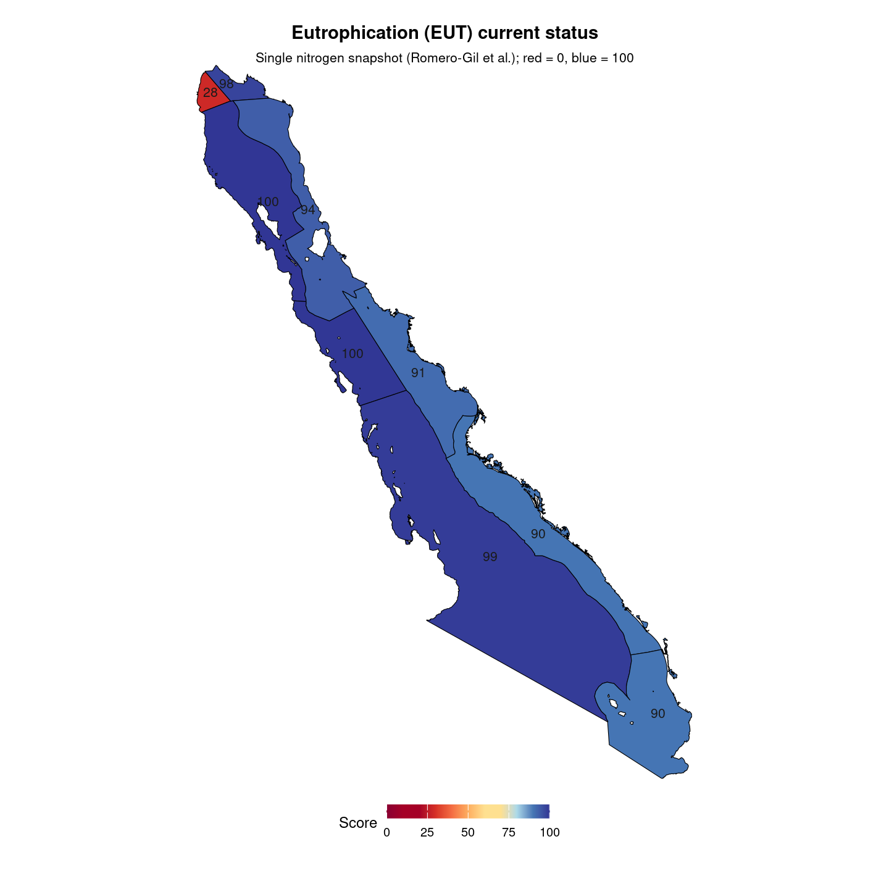
OHI region names (for reference):

Marine Debris (MAR)
Bottles, bags, foam, fragments, and other large trash on beaches and in nearshore waters are often identified long before microplastics are noticed. The Marine Debris component is meant to capture the prevalence of trash pollution in the coastal waters of the Gulf.
According to SEMARNAT’s Inventario Nacional de Fuentes de Contaminación Plástica (INFCP), 2023, in Mexico, plastics often make up a large share of beach litter, and common items include bottle caps, disposable plates and cups, bags, bottles, and cigarette butts. The national work of the INFCP is very useful for identifying that plastics are a big problem. The report states that generation is high, a large fraction of plastic waste is poorly managed, coastal disposal sites are often uncontrolled, and plastics have been documented across Pacific, Gulf of California, Caribbean, and Gulf of Mexico coasts. Large debris therefore affects recreation, wildlife entanglement and ingestion, and coastal aesthetics, and large plastics break down into smaller particles later.
Therefore, we explored whether large plastics and other visible trash could support a Marine Debris subcomponent with current status by OHI region or by coastal state over time, as well as the risk of ghost gear.
Plastic pollution
SEMARNAT’s Catálogo de residuos plásticos (Catálogo de identificación de residuos plásticos) is a national identification catalog for plastic resins and recovered materials, aimed at helping classify recyclable plastics for trade, customs, and recycling routes. It is useful for knowing what kinds of plastics are in the waste and recycling system, but it is not a monitoring survey of trash on Gulf beaches or in Gulf waters. It does not give counts, densities, or loads by OHI region, by coastal state, or by year for the Gulf of California. The Manual de Buenas Prácticas de Producción Acuícola de Camarón para la Inocuidad Alimentaria (SENASICA/CIAD Mazatlán) is a food safety and farm management manual for shrimp aquaculture. It discusses keeping facilities free of garbage, using covered bins, and preventing trash and other contaminants from entering the production system. That is relevant as a source control best practice for aquaculture landscapes around the Gulf, especially in states such as Sinaloa and Sonora where shrimp farming is prevalent. It is not, however, a time series of marine litter observations, and it does not map trash loads onto OHI regions or report how much large plastic left farms and reached the coast in each year.
We also looked at municipal urban solid waste information from INEGI’s National Census of Municipal Governments and Territorial Demarcations of Mexico City (CNGMD), including the 2025 census (information for 2024) and the longer biannual series. CNGMD reports on urban solid residues at the municipality and territorial demarcation level: availability of collection service, average daily mass collected, population with access to collection, collection systems and operators, treatment, final disposal, studies of generation and composition, programs, and citizen participation. Where municipalities lack formal collection, the census also records practices such as open dumping, burning, burying, or discarding into ravines or waterways.
Even so, we treat CNGMD solid waste as management and resilience information rather than as Marine Debris current status. The census tells us how municipalities collect, treat, and dispose of trash; it does not tell us how much trash is already on beaches or in nearshore water, how much tourists leave behind, or how much fishing gear and other marine origin debris is accumulating. Higher collection coverage can mean better source control, but it can also simply reflect larger urban waste throughout, and neither reading is the same as observed coastal condition. In OHI terms, CNGMD is closer to a pressure source or resilience layer: if waste is well managed on land, plastics travelling to the coast should decline over time, but that is an inference about future or avoided inputs, not a direct measure of the waters people experience today. For that reason we discuss CNGMD here and would welcome it later as context or as an exploratory resilience map for Gulf coastal municipalities, but we do not use it to score Marine Debris status in this draft.
We also considered the broader family of large debris data sources that people often hope can support a status score: beach cleanup tallies, citizen science litter surveys, other municipal solid waste and recycling statistics, and occasional remote sensing of very large floating objects. In the Gulf of California, those sources are still too uneven for a Tier 1 OHI status layer. Cleanup events are useful for communication and for local management, but effort, methods, and sites change over time. Municipal waste statistics describe generation and management on land, not how much trash reaches each OHI marine region. Remote sensing can help with very large objects in some settings, but it does not yet give a reliable, Gulf wide, multi-year record of ordinary beach and nearshore trash at the scale of our nine regions.
Therefore, we cannot produce a defensible current status score for large plastics or other visible trash by OHI region over time, or a clean state by state beach litter time series that we could simply reassign to OHI regions. The catalog, the shrimp manual, and CNGMD help describe the problem and the land based management context, but they do not replace a standardized, repeated monitoring product of coastal and marine trash. For that reason, plastic pollution and municipal solid waste remain descriptive in this draft, and Marine Debris status is calculated from ghost gear risk alone.
Ghost gear risk
Abandoned, lost, and discarded fishing gear (ALDFG) from marine fishing vessels is a stressor of coastal and marine ecosystems (Gilman et al. 2021). This can be a source of mortality to mammals, sea turtles, and sharks which get caught in the abandoned gear. The gear also can damage habitats and pose safety risks at sea. The risk of ghost gear in the GoC was estimated using VMS fishing data (Juan Carlos Villasenor-Derbez distribution of Mexico’s SISMEP data) paired with the risk that different fishing gear will be abandoned, lost, or discarded (Gilman et al. 2021). The VMS data provided the geolocation and timestamp of fishing vessels larger than 10.5 m and engines greater than 80 hp, which are required by Mexican law to carry transponders. Responders pinged approximately every hour after leaving port.
We then assigned ghost fishing risk scores to each vessel based on “leakage rates” of various gear types (Gilman et al., Table 2). The VMS data provides general information about gear type and target taxa which was used to align the Gilman categories with the VMS data.
For each VMS ping, we assigned a ghost gear risk based on our assessment of the vessel’s gear type and the associated ALDFG leakage rate as well as the number of fishing hours. We excluded pings with speeds greater than 6 knots to retain only active fishing positions and exclude transit, and we capped the time contribution of each ping to 3 hours. Each ping’s contribution to ghost gear pressure was calculated as:
\text{ghost\_gear\_risk}_{\text{ping}} = \text{Leakage\_risk}_{\text{gear}} \times \text{fishing\_hours}_{\text{ping}}
For each year, from 2007-2025, we then rasterized the data by summing the ghost gear risk values across all pings to 1 km grid cells. We then used this raster to determine the average ghost gear risk for each OHI marine region. To rescale pressure to a 0-1 scale, the mean of the top 5 regional means across all regions and years were used as a reference point, capping values at 1:
\text{pressure} = \frac{\text{current ghost gear risk} - \text{ideal}}{\text{maximum} - \text{ideal}}
\text{Marine Debris score} = \left(1 - \text{pressure}\right) \times 100
where \text{ideal} = 0 and \text{maximum} is the mean of the top five regional ghost gear risk means across all regions and years.
Marine Debris component result
Ghost gear risk inverted to a clean waters status score.
Gulf wide average Marine Debris current status
Marine Debris status by region (ghost gear)
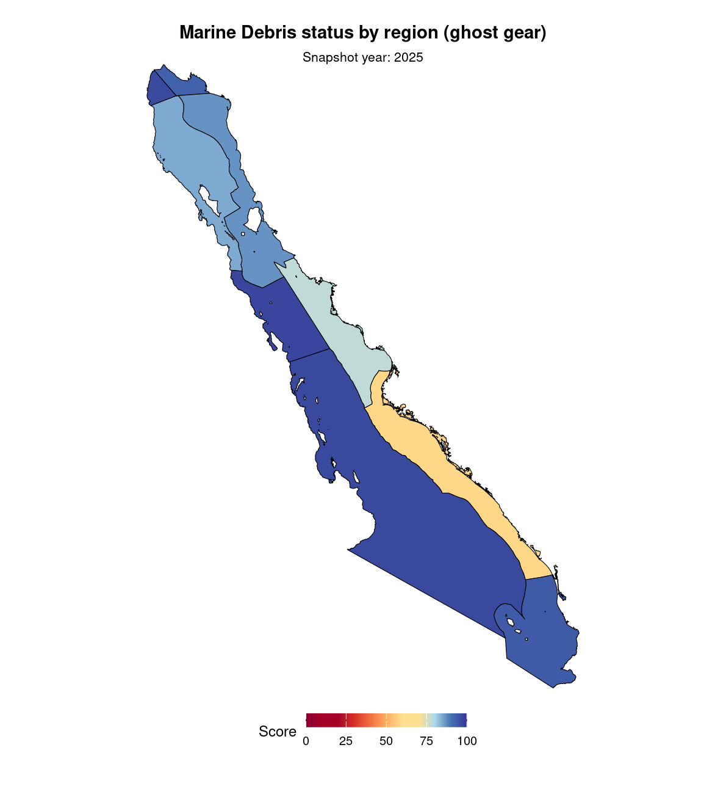
OHI region names (for reference):

Questions to discuss at EWG 3.3
- Do these scores seem right to you?
- Do you have any major questions or concerns you would like to discuss?
- How do you feel about the Eutrophication methods?
- Does it seem reasonable that the Upper Western Gulf has such a low current status score? Is the reasoning (short coastline, large livestock area) believable?
- Should we take the time to rerun the analysis to obtain status scores across multiple years?
- For indicators that use “highest observed Gulf pressures” to represent a current status score of zero, does this feel representative of the Gulf? Is there a specific, highly polluted location in the Gulf that you would not give a score of zero? If so, we can change the scale so that the lowest a region can get would be the current status of the expert-opinion most polluted location in the Gulf.
Things we considered, but decided against (for now)
This section is a list of all the indicator options we set aside because of data resolution, availability, or logic problems. If you have the time, please review these, as there is potential to highlight potential indicators to include in future OHI assessment iterations for the Gulf of California.
Eutrophication and nutrients
- Chlorophyll a as the eutrophication status indicator. Explored in depth with nearshore versus offshore corrections. We decided not to use this approach because the data did not indicate any eutrophication risk.
- Turning annual nitrogen tons into mg/L with NOM-001 limits. Abandoned because coastal mixing is not simple, so dividing by a guessed water volume would understate concentrations and overstate our confidence.
- Harmful algal blooms as the main nutrient indicator. HAEDAT is incomplete relative to satellite products; many Gulf red tides are not clearly eutrophication driven; splitting “eutrophication species” from natural blooms was difficult. Mel’s read was that HAB pressure may be near zero on a Gulf wide trend basis for the period we looked at.
- Secchi depth/water clarity products. Downloaded and explored (including Copernicus marine color products), but not brought into the Tier 1 status score due to obscurities between naturally increased sedimentation versus anthropogenically increased sedimentation.
- TRIX and dissolved oxygen/hypoxia products. Discussed with experts; not included because it was not directly indicative of a change from historical states. Was difficult to track over time.
Chemicals measured in the environment
- RENAMECA in situ water quality as a regional time series. Broad geographic coverage, but almost no consistent recent multi-year sampling at the same sites. We concluded it was not useful for our current status purposes, due to the recent years having a lot of missing data and limited monitoring.
- Compiling older in situ chemical literature (PCBs, POPs, metals, nutrients). Too few sites, taxa, and years for a stable regional indicator comparable across years. Heavy metals might be possible later with careful standardization (including sediment fine fraction), but we do not currently have that information and would need to contact each author for confirmation.
- RETC industrial emissions as a quantitative chemicals score. Useful for hotspot identification, but it is self-reported, hard to verify, and coordinates often point to offices rather than emission locations. Using this source would have been great, but difficult to clean accurately and may have produced inaccurate results.
Aquaculture chemicals
- Lyle-Fritch et al. (2006) lime, antibiotic, and related application rates as time varying kilogram loads. Mel and I decided this would not make sense as a year by year status input, because the rates are from one survey period and would not truly vary with year. Shrimp contributions in pharmaceuticals instead use production and antimicrobial use rates that can scale with mapped aquaculture.
- Remote sensing shrimp pond maps instead of INEGI / CONABIO aquaculture polygons. We preferred the land use series that is updated and Gulf wide through time, even though culture type is not always specified.
Pharmaceuticals and wastewater treatment detail
- Process weighted pharmaceutical removal by treatment level (primary/secondary/tertiary). This was considered; the saved pharmaceuticals score uses effluent volume times literature concentrations instead. The process fields in the data we used were still useful for spotting anomalies.
- A Mexico-specific time series of pharmaceutical consumption per person. Hard to find usable data and to limit to only certain key pharmaceuticals.
Pathogens
- Using 104 NMP/100 mL as the upper threshold. Explored based on California guidance; we stuck with Mexico’s 200 threshold.
Marine debris
- Microplastics as a scored Marine Debris subcomponent. Explored with global and Mexican datasets. Not enough comparable Gulf time series, and methods differ across matrices. We also found it to fit better into Chemicals, so it is located there for now.
- Beach litter counts or cleanup tallies integrated in some way, or something for trash. Discussed more as management/resilience information than as the core status metric. We struggled to find data regarding beach trash that was not collected by beach cleanups. Another option was to look at the recycling of plastics at waste management plants.
Acknowledgments To Date
Many thanks to the members of the CW goalkeeper group (Jaqueline Garcia-Hernandez, Miguel Betancourt, Alejandra Irasema Campos, David Alberto Salas de León, Geovanni (Geo) Coredero Herrera, Jorge Arriaga, José Antonio Romero Gil) and the Expert Working Group for their help conceptualizing this goal, identifying data sources, and interpreting outputs.
Report Metadata
Report prepared by Sophia Lecuona Manos; reviewed by members of the OHI Core Team.